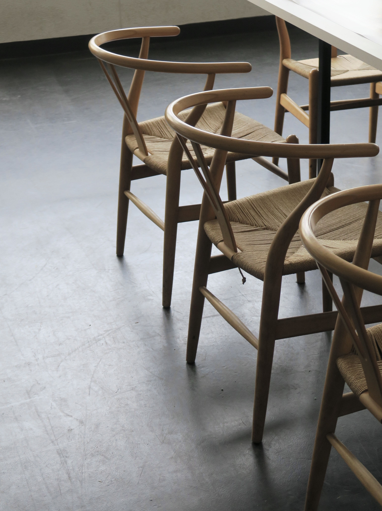
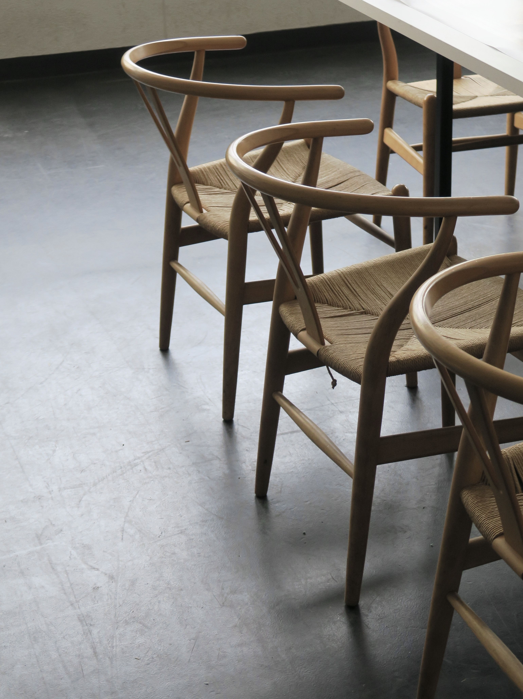
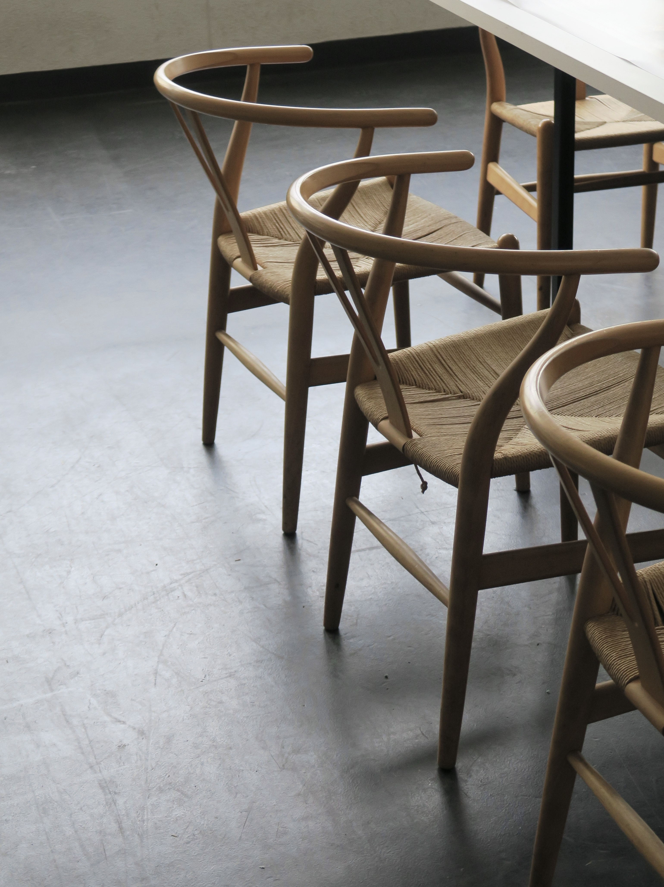

Project_A Handout
多摩美術大学統合デザイン学科長崎綱雄・角尾舞プロジェクトオープンキャンパス ハンドアウトのデザイン。 素敵な朝食をテーマにデザインしたテーブルウェアを纏めました。制作環境をそのままビジュアルにしています。表紙は2種類、Yチェアとコンテナボックス。 AD,D,P : Nozomi Terashima CL: INTEGRATED DESIGN


 

多摩美術大学統合デザイン学科長崎綱雄・角尾舞プロジェクトオープンキャンパス ハンドアウトのデザイン。 素敵な朝食をテーマにデザインしたテーブルウェアを纏めました。制作環境をそのままビジュアルにしています。表紙は2種類、Yチェアとコンテナボックス。 AD,D,P : Nozomi Terashima CL: INTEGRATED DESIGN
